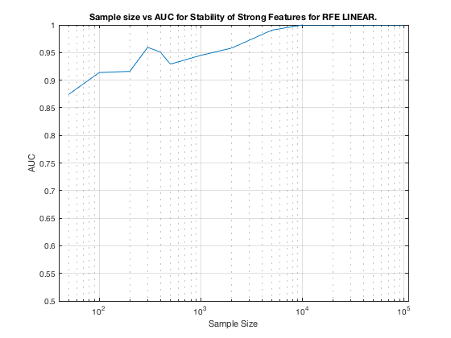

TIE-Net. Summary. SVM-RFE.
summary_stability_type("TieNet", 2)
TOTAL COUNTS: Total=53, Strong=23, Weak=26, Irrelevant=4
Figure 13. Stability as a predictor for Strong Features for SVM-RFE on TIE-Net.
________________________________________________________________________________

Table 13. Breakdown of Stability by Feature Type for SVM-RFE.
______________________________________________________________
(1) Number Features Repeat (n_fs_rep): number of unique features that were selected in a repeat
(2) Number Features Fold (n_fs_fold): number of unique features that were selected in a fold
(3) Feature Stability ~ Feature Selection Frequency
Sample_Size All_n_fs_rep All_n_fs_fold All_Stability
___________ _______________________ _____________________ ___________________
' 50 ' ' 11.500 +/- 0.208 ' ' 2.552 +/- 0.024 ' ' 0.048 +/- 0.065 '
' 100 ' ' 8.100 +/- 0.152 ' ' 2.246 +/- 0.017 ' ' 0.042 +/- 0.087 '
' 200 ' ' 8.020 +/- 0.194 ' ' 2.434 +/- 0.020 ' ' 0.046 +/- 0.123 '
' 300 ' ' 10.720 +/- 0.270 ' ' 2.938 +/- 0.030 ' ' 0.055 +/- 0.141 '
' 400 ' ' 12.440 +/- 0.267 ' ' 3.368 +/- 0.037 ' ' 0.064 +/- 0.137 '
' 500 ' ' 11.780 +/- 0.254 ' ' 3.414 +/- 0.036 ' ' 0.064 +/- 0.152 '
' 1000 ' ' 23.780 +/- 0.331 ' ' 5.736 +/- 0.052 ' ' 0.108 +/- 0.177 '
' 2000 ' ' 27.060 +/- 0.234 ' ' 8.218 +/- 0.067 ' ' 0.155 +/- 0.207 '
' 5000 ' ' 34.180 +/- 0.168 ' ' 18.998 +/- 0.081 ' ' 0.358 +/- 0.331 '
' 10000 ' ' 34.100 +/- 0.130 ' ' 25.734 +/- 0.037 ' ' 0.486 +/- 0.431 '
' 100000 ' ' 33.480 +/- 0.065 ' ' 27.052 +/- 0.007 ' ' 0.510 +/- 0.461 '
Sample_Size Strong_n_fs_rep Strong_n_fs_fold Strong_Stability
___________ _____________________ _____________________ ___________________
' 50 ' ' 7.880 +/- 0.095 ' ' 1.908 +/- 0.016 ' ' 0.083 +/- 0.085 '
' 100 ' ' 6.800 +/- 0.078 ' ' 1.980 +/- 0.009 ' ' 0.086 +/- 0.119 '
' 200 ' ' 6.300 +/- 0.085 ' ' 2.238 +/- 0.010 ' ' 0.097 +/- 0.175 '
' 300 ' ' 7.860 +/- 0.122 ' ' 2.642 +/- 0.016 ' ' 0.115 +/- 0.201 '
' 400 ' ' 9.320 +/- 0.126 ' ' 3.006 +/- 0.021 ' ' 0.131 +/- 0.189 '
' 500 ' ' 8.720 +/- 0.103 ' ' 3.058 +/- 0.020 ' ' 0.133 +/- 0.213 '
' 1000 ' ' 16.000 +/- 0.140 ' ' 4.812 +/- 0.033 ' ' 0.209 +/- 0.234 '
' 2000 ' ' 20.220 +/- 0.107 ' ' 7.086 +/- 0.047 ' ' 0.308 +/- 0.233 '
' 5000 ' ' 23.000 +/- 0.000 ' ' 16.060 +/- 0.062 ' ' 0.698 +/- 0.125 '
' 10000 ' ' 23.000 +/- 0.000 ' ' 21.746 +/- 0.024 ' ' 0.945 +/- 0.031 '
' 100000 ' ' 23.000 +/- 0.000 ' ' 23.000 +/- 0.000 ' ' 1.000 +/- 0.000 '
Sample_Size Weak_n_fs_rep Weak_n_fs_fold Weak_Stability
___________ _____________________ _____________________ ___________________
' 50 ' ' 3.280 +/- 0.112 ' ' 0.606 +/- 0.017 ' ' 0.023 +/- 0.019 '
' 100 ' ' 1.180 +/- 0.077 ' ' 0.252 +/- 0.012 ' ' 0.010 +/- 0.014 '
' 200 ' ' 1.560 +/- 0.102 ' ' 0.180 +/- 0.011 ' ' 0.007 +/- 0.009 '
' 300 ' ' 2.540 +/- 0.141 ' ' 0.264 +/- 0.014 ' ' 0.010 +/- 0.005 '
' 400 ' ' 2.800 +/- 0.140 ' ' 0.330 +/- 0.015 ' ' 0.013 +/- 0.011 '
' 500 ' ' 2.740 +/- 0.139 ' ' 0.324 +/- 0.015 ' ' 0.012 +/- 0.011 '
' 1000 ' ' 6.960 +/- 0.195 ' ' 0.842 +/- 0.022 ' ' 0.032 +/- 0.026 '
' 2000 ' ' 6.360 +/- 0.150 ' ' 1.076 +/- 0.024 ' ' 0.041 +/- 0.056 '
' 5000 ' ' 10.500 +/- 0.139 ' ' 2.870 +/- 0.023 ' ' 0.110 +/- 0.158 '
' 10000 ' ' 10.620 +/- 0.107 ' ' 3.930 +/- 0.018 ' ' 0.151 +/- 0.197 '
' 100000 ' ' 9.960 +/- 0.057 ' ' 3.948 +/- 0.007 ' ' 0.152 +/- 0.226 '
Sample_Size Irrelevant_n_fs_rep Irrelevant_n_fs_fold Irrelevant_Stability
___________ ___________________ ____________________ ____________________
' 50 ' ' 0.340 +/- 0.017 ' ' 0.038 +/- 0.002 ' ' 0.009 +/- 0.003 '
' 100 ' ' 0.120 +/- 0.012 ' ' 0.014 +/- 0.001 ' ' 0.004 +/- 0.002 '
' 200 ' ' 0.160 +/- 0.016 ' ' 0.016 +/- 0.002 ' ' 0.004 +/- 0.000 '
' 300 ' ' 0.320 +/- 0.022 ' ' 0.032 +/- 0.002 ' ' 0.008 +/- 0.000 '
' 400 ' ' 0.320 +/- 0.022 ' ' 0.032 +/- 0.002 ' ' 0.008 +/- 0.000 '
' 500 ' ' 0.320 +/- 0.022 ' ' 0.032 +/- 0.002 ' ' 0.008 +/- 0.000 '
' 1000 ' ' 0.820 +/- 0.032 ' ' 0.082 +/- 0.003 ' ' 0.021 +/- 0.001 '
' 2000 ' ' 0.480 +/- 0.026 ' ' 0.056 +/- 0.003 ' ' 0.014 +/- 0.000 '
' 5000 ' ' 0.680 +/- 0.030 ' ' 0.068 +/- 0.003 ' ' 0.017 +/- 0.002 '
' 10000 ' ' 0.480 +/- 0.024 ' ' 0.058 +/- 0.003 ' ' 0.014 +/- 0.003 '
' 100000 ' ' 0.520 +/- 0.015 ' ' 0.104 +/- 0.003 ' ' 0.026 +/- 0.027 '